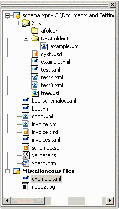

The Project Manager window displays all the current user projects, with all the files and folders contained in them, as well as miscellaneous files - displayed under "Miscellaneous Files" project node.
Below is a screenshot of the Project Manager:
